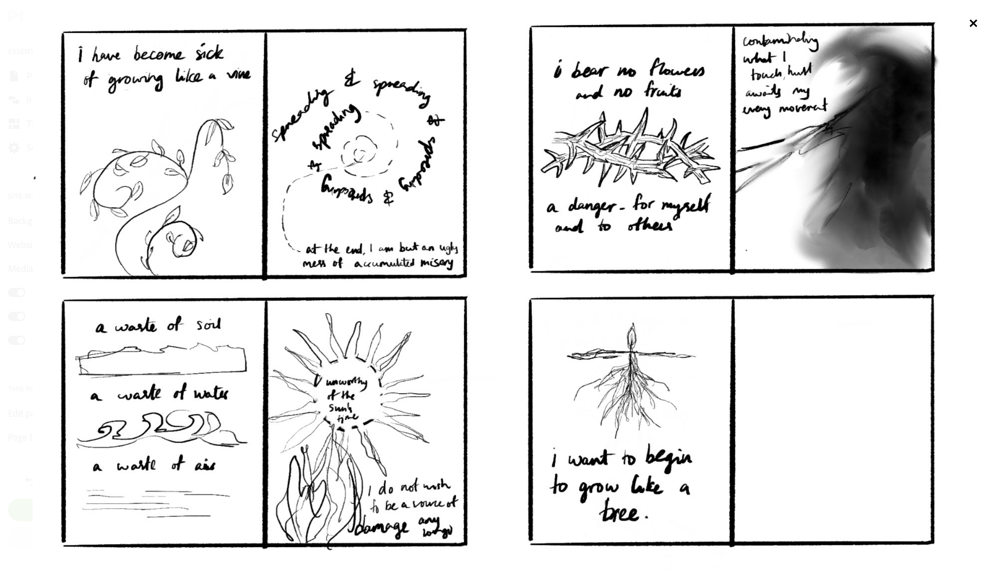
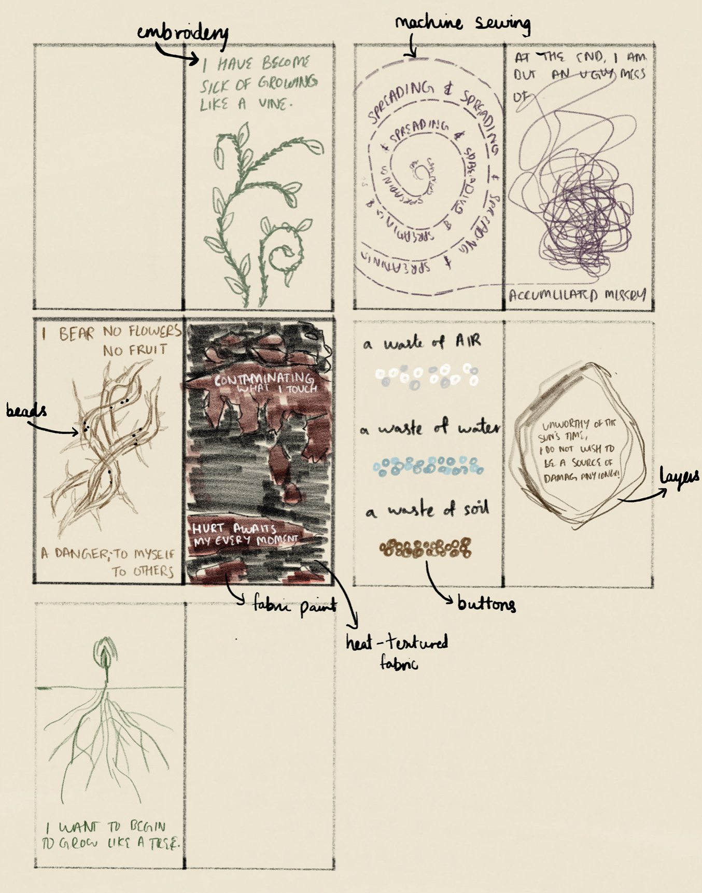

Archive
Metanoia

The Greek term ‘metanoia’ translates to a change of mind and one’s way of life. This fabric book describes my own metanoia, through a poem I wrote and illustrated through textiles. Chronicling the stages of my healing journey, it starts with the admission of guilt for current misery, and ends with the acceptance of rebirth.
Process

